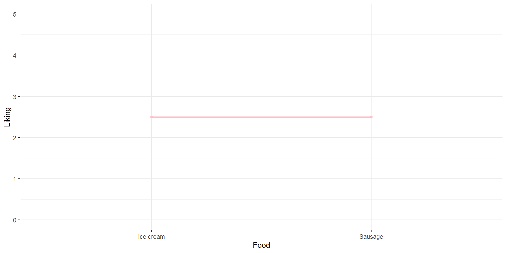

| Mustard | Chocolate | |
|---|---|---|
| Sausage | \(\mu_{S,M}\) | \(\mu_{S,C}\) |
| Ice cream | \(\mu_{I,M}\) | \(\mu_{I,C}\) |


Main Effects
Main Effect: Effect of one factor, controlling for the other factor (and optionally interaction).
- Main effect of food on liking: No preference
- Main effect of topping: Slight preference for chocolate
